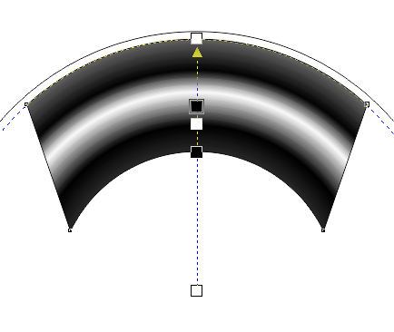

Не корректная работа радиальной заливки
Добрый_ХАМ / 22.02.2012, 20:43/00:41
Форум:
Версия программы:
15.1.0.588 (sp1)
Привет, творческий люд! Принесли мне в работу бумажные стаканчики. Ну тут сразу вопросов в голове - целый ворох, все в основном касательно корректного искажения сложных групп объектов и текстов. Но не добравшись даже до этого момента, столкнулся с неприятным моментом работы градиентной заливки. Её логика работы и ранее мне не симпатизировала, но в те моменты точность была не критична, а теперь вот, нашла коса на камень.
Из скринов видно что несмотря на правильно расставленные маркеры цветов - заливка не попадает в горизонтальный направляющие стакана. И я не понимаю что с этим делать. Помогите, если есть у кого какие мысли.
В общем скрин тут - http://s002.radikal.ru/i197/1202/10/a5e01c5454ae.jpg
Добрый_ХАМ, Используйте инструмент Mesh
themadman, Ну этот вариант конечно же возможен. Правда конкретно в этом случае, направляющие в меше не выстраиваются параллельно краям. А на их редактирование требуется время. Причём с меш-залитыми объектами сложнее работать, они лишаются многих преимуществ. И что желать если заливка будет более сложная? В общем это вариант, но не выход. В любом случае спасибо за участие!
Собственно, совершенно не вижу проблемы в работе заливки.
Как и с прикреплением файлов.

Sancho, Тот радиус что в твоём, что в моём варианте, максимальный для Corel? Ибо увеличить радиус более чем на моём скрине, у меня никак не получилось. Так, что-бы градиент был параллелен краям, как собственно должен-бы был.
Кстати да, возможность прикреплять у меня раздуплилась, чем и пользуюсь. Высылаю файлик с контуром ножа под стаканчик и вспомогательной окружностью для градиента. Взгляните пжалста, что я не так делаю.
Нет больше идей? Может какой макрос есть для более внятного управления градиентом?
Добрый_ХАМ, лично я не понимаю в чём проблема. На твоём скрине овал градиента не совпадает с формой, я думал проблема в этом, но видимо нет раз мой скрин не к чему не привёл.
Sancho, У тебя он совпал по тому что радиус объекта к которому он применён слишком мал. Попробуй добиться этого эффекта в файле который я выслал ранее. Но судя даже по предыдущим твоему скрину, маркеры на направляющей градиента расположены не верно относительно самого градиент в объекте. Значит скорее всего эта проблема не локальная, а повторяется повсеместно. По этому вопрос о решении, или подходящем макросе остаётся открытым. Либо, если я ошибаюсь, пожалуйста, научите меня пользоваться радиальным градиентом.
Как выход в данном конкретном случае используй бленд.
все нормально работает , не только с блендами но и с контурами
Страницы